Üretim sanat paketi
Yeni dosyaların önizlemesi. Seçilmiş ikon ve koridor aynı bırakıldı; yeni varlıklar v01 çalışma çıktılarıdır.
Tüm A/B seçimleriYeni ekranlar #20–25Menü taslağıTelefon safe-area seçenekleriLEVEL X tuşu A/BTutorial eli A/BEngel sahneleri A/BZor bölüm A/BPopup çerçevesi A/BZafer görseli A/BKaybetme görselleri A/BEngel ikonları · 128 pxBooster ikonları · 128 pxTablo yönü A/BTahta altlığı A/BSesleri dinle · A/B2,8 sn hareketli animatik
Onaylı ikon · hazırlanmış boyutlar
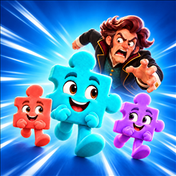
LEVEL X tuşu · iki renk adayı
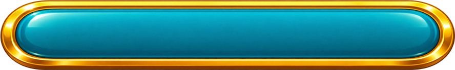
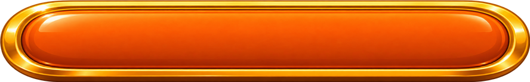
Güçlendiriciler · 1024 px şeffaf dışa aktarımlar
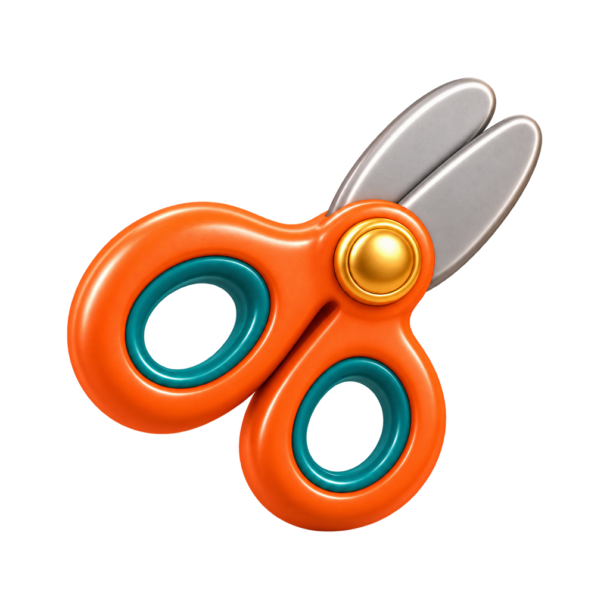
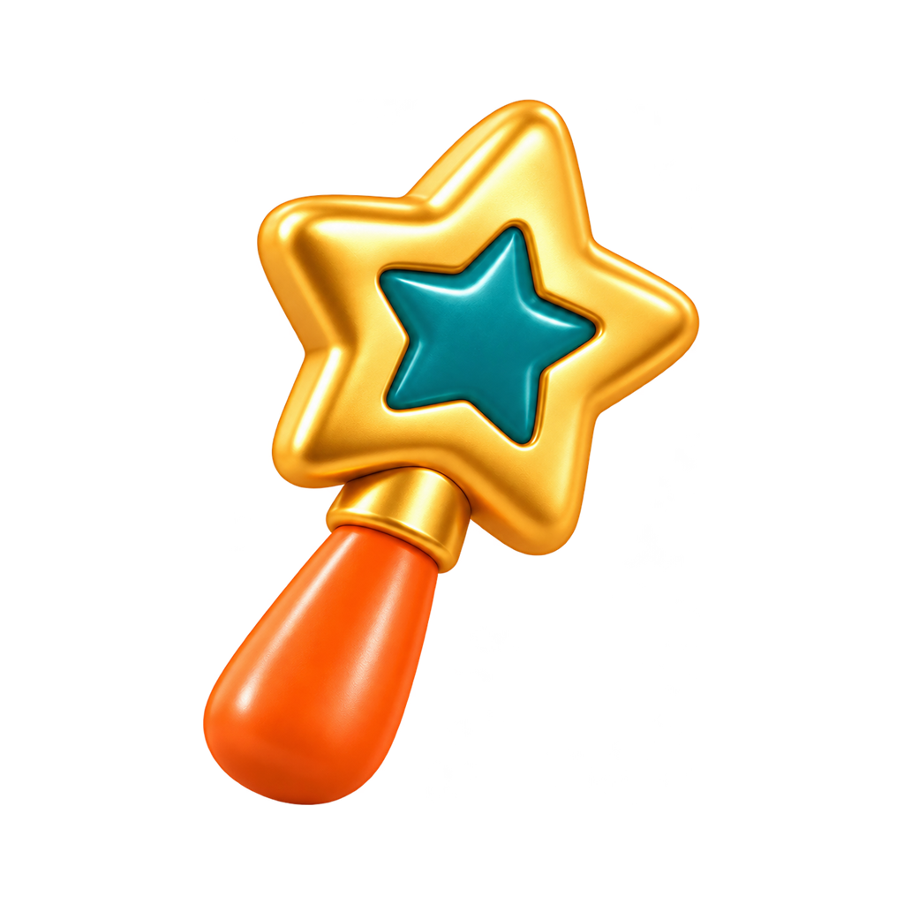
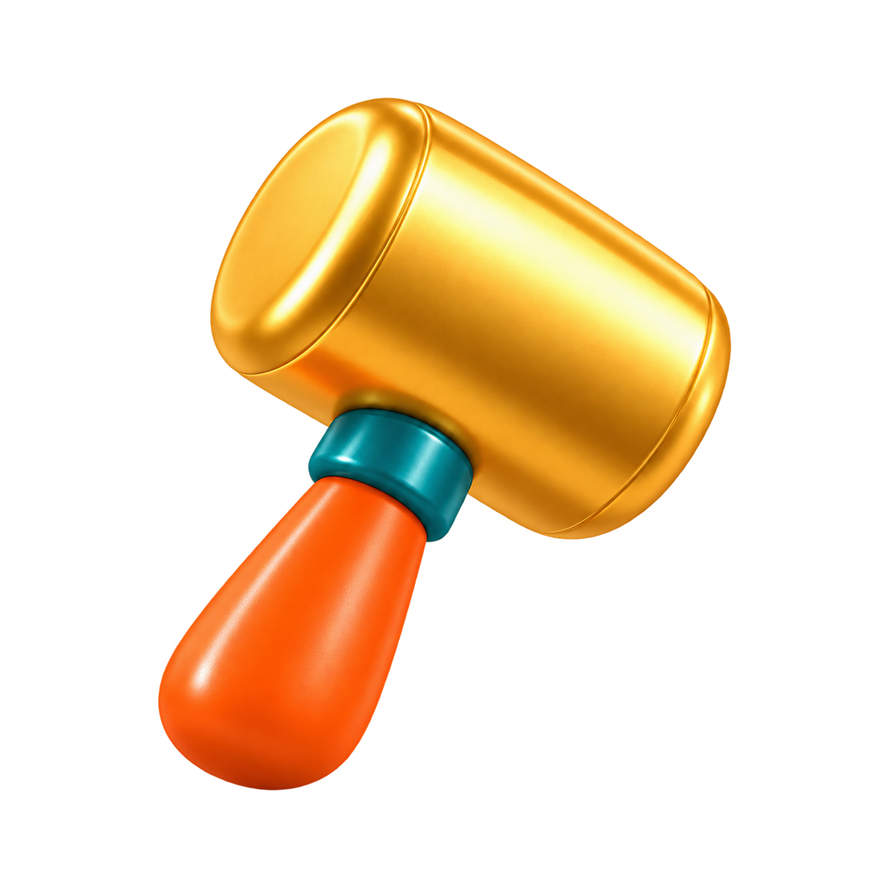
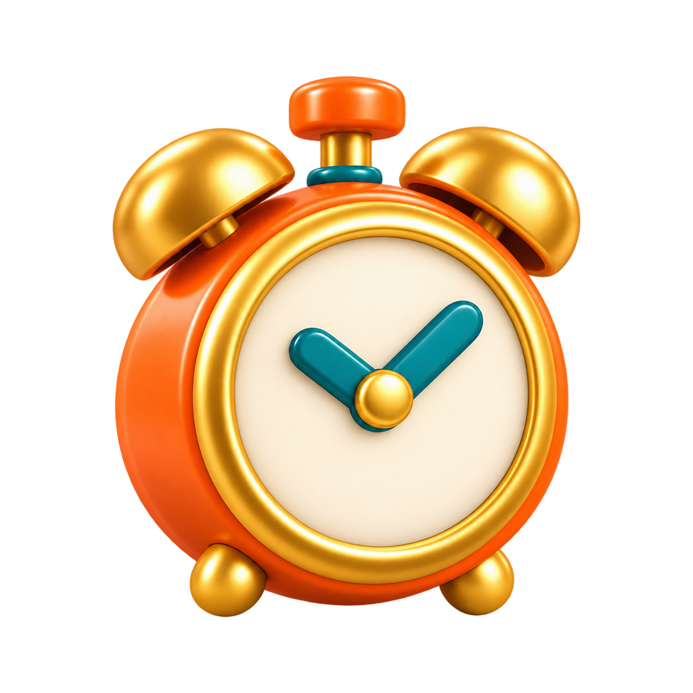
Engeller · 1024 px şeffaf dışa aktarımlar
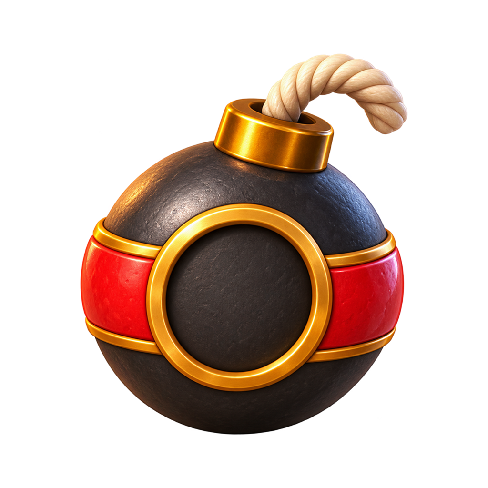
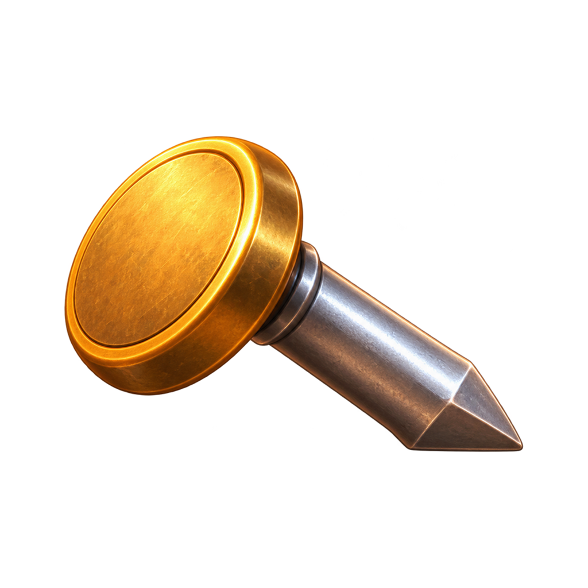
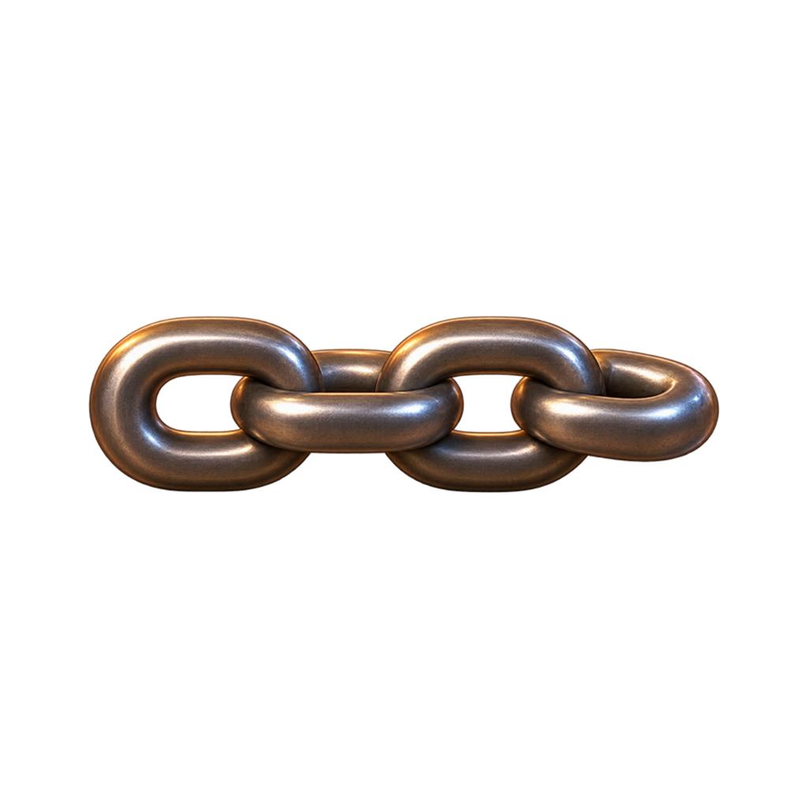
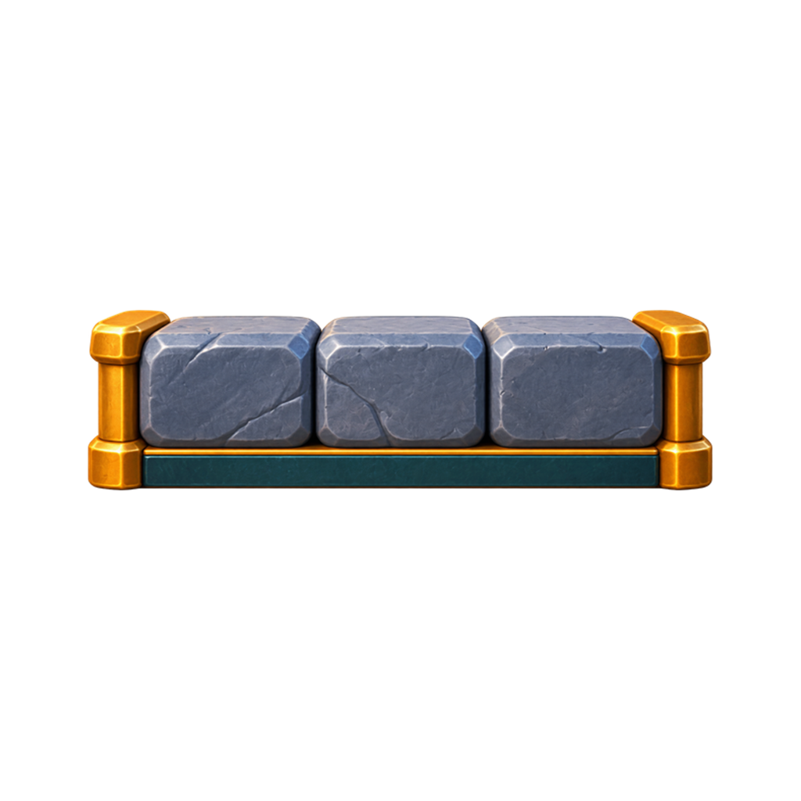
Menü kompozisyonu
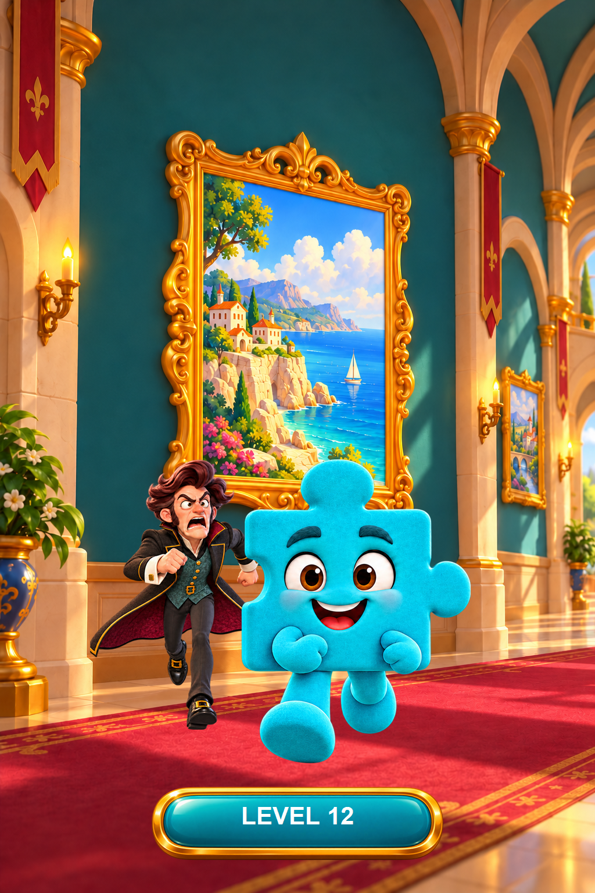
Hareketli demo
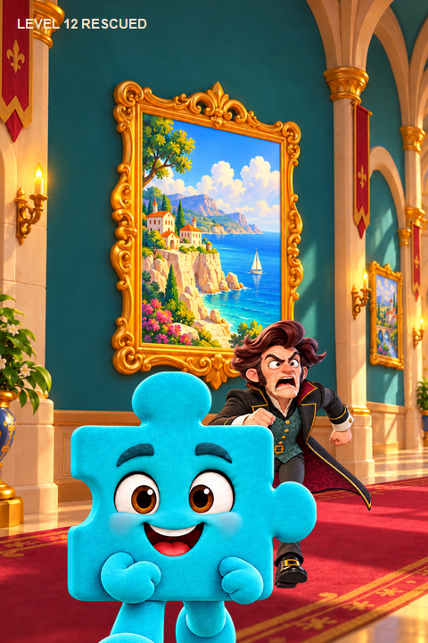
Bu PNG’ler sanat üretim adaylarıdır; oyun motoruna bağlanmadı. İkon cihaz boyutları 256/512/1024 piksel olarak ayrıca hazırlandı.